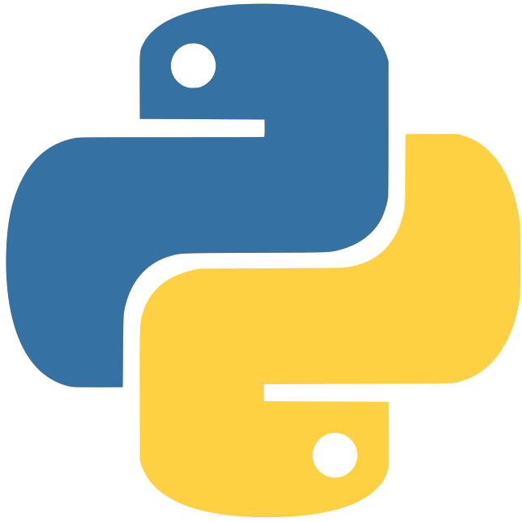

The software-developement activities I've been involved in so far have mostly been centered around creating free and open-source (mostly -based) computer programs for people with severe motor disabilities (such as cerebral palsy or SM, Stephen Hawking-like conditions, that is such with some muscles' control remaining functional) dedicated for communication, education and entertainment. Designed to be operated with a single binary-choice switch devices or eyetrackers (or, as a longer-term goal, with Brain-Computer Interfaces), they've been developed as a project for student internships in Ożarowska Association, or as part of the PISAK Project (Polish Integrative System of Alternative Communication). Those are:
Unfortunately, as of today, most of the above is in rather developmental/proof-of-concept stages (and used in some tailored and adjusted versions by individual users), and should run only under some Linux distributions (Ubuntu).